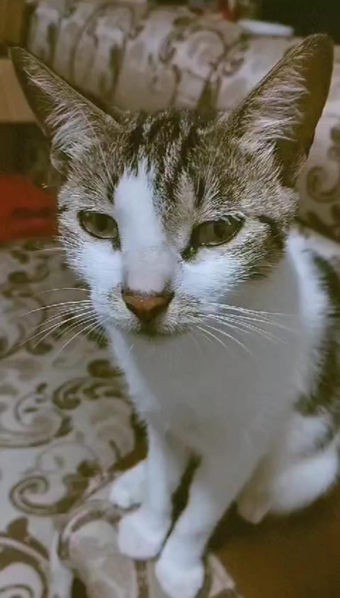

Hola mi amor, solo paso a recordarte que estás super linda y muy guapa. Estás super bonita, eres demasiado linda, mi amor. Quiero que sepas que estoy muy orgulloso de ti y que estoy siempre pensando en ti. Tenemos muchos besitos pendientes, mi amor, jijij.
Recuerda también que siempre estaré aquí para ti, mi amor. Te hice esto con mucho amor y con mucho cariño. No te puedo ver seguido, pero eso no quiere decir que no piense en ti.
Yo estoy siempre pensando en ti, mi amor, y en cómo poder hacerte muy feliz. Así que paso a compartirte estos lindos gatitos.
Cuando te vea, prometo demostrarte mi amor así como estos gatitos, mi amor.
Estos gatitos picaros están un poquito subidos de tono. Quiero que seamos estos gatitos.
Quiero ser el gatito de arriba y tú el gatito de abajo🙈.
Sé que el hecho de madrugar todos los días puede ser bastante cansado, y más si no tienes un día de descanso, amor. Yo entiendo mucho tu cansancio y tu estrés, y por eso lo que más quiero es que también seamos estos gatitos. Te regalo a ti un lindo y rico masaje relajante con derecho a mil besos míos🥺.
Como sé que muchas veces estás cansada, te propongo una cita diferente🙈. Consiste en mimirnos juntos una tarde mientras yo te lleno de muchos besitos, así como estos gatitos.
Huyyy estos gatitosssssss🙈
Que barbaridad amor, no se como llegaron aqui y nose que estan haciendo
Pero tambien si queres podemos ser estos gatitos🥺
Quiero llenarte de mil besos esa carita linda que tienes mi princesa hermosa eres muy linda y quiero darte mil besossss mi amorrrrr
Se que eres una niña muy linda y muy sensible mi amor Tienes un corazon tan tierno, a pesar que te muestres fuerte, yo te conozco y se lo fragil que puedes llegar a ser, y lo mucho que algunas cosas puedan afectarte Por eso te hago esto con mucho pero mucho amor, pongo todo mi amor en todo lo que te hago y disfruto mucho el hacerte cositas asi, porque me esfuerzo mucho para sacarte una linda sonrisa, a mi me encanta verte feliz y yo quiero que seas feliz, por eso dedico mi tiempo en ti, porque tu eres muy valiosa y muy importante para mi, solo queria recordatelo mi amor y queria mostrarte mi amor con gatitos, se que tu amas los gatitos y por eso se me hizo una linda idea princesa hermosa
Eres un amor de persona, por favor jamas lo olvides, se que en algunos momentos puede que no te sientas bien, se que tienes un lado muy sensible que es probable que no se lo muestres a nadie pero yo a ti te conozco como nadie mas te conoce, y es por eso que a ti te digo que conmigo puedes ser tu, porque tu eres una niña pequeña, MI niña pequeña una niña que merece mucho amor, y yo le dare todo ese amor, quiero protegerte y cuidarte cada dia, y enamorarte cada dia, hacerte sentir la mas linda del mundo porque eres la niña mas linda, eres una niña unica
Se que el vacio de tu hermano no lo llenara nada ni nadie, pero solo quiero que tu vida sea siempre feliz, no tenes porque sentirte rechazada en este mundo yo te brindare todo mi amor para que te sientas muy amada, te mereces todo lo bonito de este mundo, y por eso te hago cada uno de estos detallitos todo mi amor, y desde lo mas profundo de mi corazon Solo me queda recordate que estoy muy orgulloso de ti, estoy super orgulloso de ti y que soy tu fan #1, te amo mucho mi amorcito linda, con amor: De Bryan para Azu hermosa❤️
Este es un pequeño detalle con mucho amor de mi parte, y se me hizo lindo colocar una foto de la linda toña
Te mando un lindo beso princesa😻😽
Te amo mucho, por favor jamas lo olvides, eres muy amada por mi